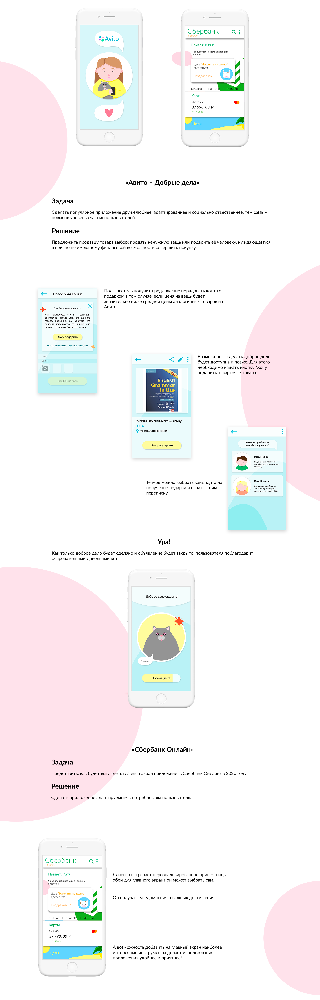

Мобильные приложения «Авито — добрые дела»и «Сбербанк онлайн»
Воплощение моей идеи о том, каким образом можно сделать приложение,
используемое миллионами пользователей, более социально ответственным,
адаптированным и дружелюбным.
Что сделано:
Идея / Дизайн мобильного приложения
